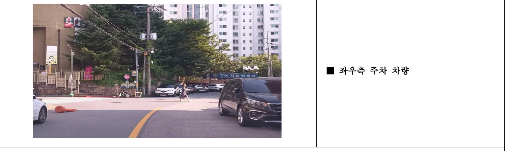

709. Hai cách lái xe nào là an toàn nhất trong tình huống sau?

- ①Lái xe chậm một cách an toàn hoặc tạm dừng lại để bảo vệ người đi bộ qua đường.
- ②Vì không có nghĩa vụ bảo vệ người đi bộ qua đường nên nhanh chóng đi qua.
- ③Vì cửa xe đang đỗ bên phải có thể mở ra, nên cần đề phòng và đi qua.
- ④Nếu không đủ chỗ đậu xe, có thể đỗ xe ở phần lề đường màu đỏ phía bên trái phía trước.
- ⑤Không cần phải chú ý đến người đi ra từ phía sau những xe ô tô đang đỗ, nên có thể tăng tốc và đi qua.
Xem đáp án
Đáp án
① Lái xe chậm một cách an toàn hoặc tạm dừng lại để bảo vệ người đi bộ qua đường.
③ Vì cửa xe đang đỗ bên phải có thể mở ra, nên cần đề phòng và đi qua.
Căn cứ
Khi người đi bộ băng qua đường không có lối qua đường, người lái phải giữ khoảng cách an toàn, đi chậm hoặc dừng lại để họ qua an toàn. Cần đề phòng cửa xe đang đỗ bất ngờ mở. Cấm cả dừng và đỗ xe tại đoạn bó vỉa màu đỏ trước trụ cứu hỏa.
Phần căn cứ là bản dịch máy để tham khảo.